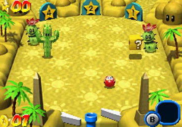

Plates-formes, course, tennis, golf, foot, party game, versus fighting, puzzle game, jeu éducatif, jeu de rythme, … Après s’être essayé à quasiment toutes les formes de jeux vidéo, Mario devient la star d’un jeu de flipper dans Super Mario Ball (Mario Pinball Land en Amérique). Au programme, un jeu décevant qui ne cessera de vous mettre en boule.
On retrouve nos amis en train faire la queue pour une étrange attraction : une machine écrase et comprime un Toad qui est violemment envoyé contre une cible, ce qui n’a pas l’air de lui déplaire… Les habitants du royaume Champignon ont vraiment de drôle de façon de se divertir. Enfin bref, c’est le tour de la princesse Peach, c’était sans compter l’intervention de deux Goombas détournant la machine pour qu’elle se retrouve projetée dans le château de Bowser, Mario décide d’aller la sauver.
Cette courte et très très cheap cutscene d’introduction a le mérite de planter efficacement le décor.
Le jeu se démarque beaucoup des autres jeux de flippers par son originalité.
Il compte 5 mondes pour autant de flippers différents. Chaque monde est divisé en une multitude d’écrans verticalement, énormément plus que dans les autres jeux de flippers. Et quasiment chaque écran compte un petit défi à réaliser qui vous récompensent d’une étoile si vous le réussissez. En collectant assez d’étoiles vous pourrez affronter le boss du monde correspondant.
Donc ce n’est pas que la structure des niveaux qui est originale il s’agit aussi de l’objectif du jeu, ici il ne s’agit pas de récolter le plus de points comme dans la plupart des jeux de flipper mais de récolter des pièces, d’obtenir toutes les étoiles, de battre les boss, … Exactement comme dans un jeu Mario en fait.
Pour en revenir aux défis, même s’ils consistent souvent à tuer tous les ennemis à l’écran, ils peuvent être mis en scène de façons très originales, quelques bons exemples : dans un écran 4 maskass de couleurs différentes patinent sur la glace, à chaque fois que vous en tué un, un autre apparaît d’une couleur différente, pour avoir l’étoile, il faut que les maskass soient de la même couleur ; , des serpents sortent chacun à leur tour de jarres situées aux 4 coins de la pièce, si l’un d’eux arrive au trou placé au centre de la pièce, le joueur perd et doit recommencer, s’il arrive à défaire toutes les vagues de serpent il gagne l’étoile ; , on trouve une pyramide enterrée et des vautours qui volent autour, si le joueur touche les statues situées aux deux coins supérieurs de l’écran, la pyramide va progressivement sortir du sol ce qui va permettre de continuer à l’intérieur, cependant si le joueur envoie la bille sur la pyramide, elle peut alors servir de tremplin pour tuer les oiseaux qui volent autour et récolter une étoile.
À noter qu'en récoltant des pièces bleues (pièces qui s’obtiennent lorsque la balle tue plusieurs ennemis à la suite en faisant des rebonds) il est possible de jouer à des mini-jeux permettant de gagner des étoiles.
La petite particularité de gameplay du jeu, ce sont les objets. En effet, en ayant assez de pièce vous pourrez acheter un objet que vous pourrez utiliser à n’importe quel moment en appuyant sur B. On retrouve : le champignon augmentant la taille de la balle, le mini-champi permettant à contrario de rétrécir et de se glisser dans des endroits inaccessibles autrement, l’éclair qui tue tous les ennemis à l’écran, la multiball ou le tuyau qui permet de bloquer temporairement le bas du flipper pour que la balle ne tombe pas.
L’univers de Mario se retrouve aussi dans le bestiaire comme avec les boos qui se rendent invincibles lorsque la bille leur fait face, avec les pingouins de Mario 64 qui tombent et glissent sur la glace une fois touché (c’est le seul moment où ils sont vulnérables) ou avec les Pokeys dont il faut défaire chaque partie pour en venir à bout. Les mécaniques de ces ennemis apportent beaucoup au jeu.
En dehors des rarissimes cutscenes le jeu est vraiment beau malgré l’utilisation de la 3D précalculé qu’on ne remarque même pas (à titre de comparaison elle a vraiment mal vieilli dans Mario Vs Donkey Kong sur la même console). Le jeu est très coloré et les écrans sont très différents les uns des autres tant au niveau des situations, du level-design que juste visuellement.
Les musiques sont vraiment très bonnes et ont l’avantage de n’être pas des remixes d’autres thèmes de Mario ce qui est vraiment très rare dans les jeux où il figure. Quelques bons exemples : Grass Area, Snowy, Under the Ice (musique qui ne joue que sur un seul écran du jeu et qui donne le seul moment relaxant du jeu), Sandy. On trouve également les thèmes de boss qui sont tous de très bonnes variations d’un même thèmes (oui oui c’est possible) : Cheep Cheep Pufferfish Battle, Petey Piranha Battle, Tutankoopa. Bien sûr on n’oubliera pas le très bon thème de Bowser.
Voilà tout le bien que je peux dire du jeu maintenant il va falloir que j’en dise du mal. Oui car le jeu possède de gros problèmes de maniabilité et de game design, choses totalement rédhibitoires pour un jeu de flipper.
Le gros problème du jeu c’est qu’on meurt tout le temps. Enfin non, on échoue tout le temps, car c’est bien là le problème, les vies ne servent à rien du tout. Pour perdre une vie, il faut que la balle tombe tout en bas du flipper, c’est-à-dire dans l’écran le plus bas du monde en cours, ce qui n’arrive jamais et ce qui, au passage, rend totalement caduc le système de score instauré par les développeurs tant il est facile de scorer de façon infinie en restant dans les écrans les plus supérieurs.
Je pense que le problème vient de beaucoup de choses à la fois : les terrains qui sont très larges au lieu d’être resserrés comme dans la plupart des flippers; la présence des ennemis qui peuvent aller jusque jusqu’au bas de l’écran dans certains cas ; le fait qu’on manque les slingshots et d’autres éléments de flipper qui pourrait nous aider ; la balle qui va peut-être trop vite ; les défis qui durent trop longtemps, …
Bref, les raisons sont multiples mais le fait est qu’on perd constamment la balle pour des raisons à la con. Et lorsque Mario tombe juste une fois de l’écran du défi en cours, on doit le ramener dans l’écran où on était (ce qui est loin d’être facile) et on doit recommencer le défi du début.
J’adore les Die & retry mais ici nous ne sommes pas en face d’un bon D&R; qui fasse appel à l’analyse, la réflexion et la mémorisation, nous sommes en face d’un D&R; de la pire espèce, ceux qui font appel à la chance.
Mais des problèmes dans ce jeu, il y en a la pelle. Commençons par le plus gros à savoir que Super Mario Ball possède le pire système de sauvegarde au monde.
Lorsque vous sauvegardez dans ce jeu, le jeu enregistre et vous fait retourner à l’écran titre, jusque-là c’est très bien. MAIS, pour éviter que vous trichiez avec le score (score qui, je vous le rappelle, ne sert à rien) lorsque vous chargez votre partie, le jeu vous ramène là où vous étiez et efface votre sauvegarde, ce qui veut dire que si la console s’éteint en cours de jeu, votre partie est perdu à jamais.
Je rappelle juste que nous sommes sur une console portable et que par définition la batterie est susceptible de lâcher à n’importe quel moment lors des transports. Je ne vous raconte même pas comment durant tout le jeu j’ai été stressé par la peur de perdre ma partie à cause d’un bug, d’une perte de batterie ou juste par le fait d’allumer ma console en me rendant compte que j’avais oublié de sauvegarder, c’était horrible.
Continuons avec le multiball, dans la plupart des jeux de flipper ou de casse-brique, ce bonus permet de rajouter d’autres balles en jeu et c’est lorsque la dernière balle est tombée que le joueur perd la partie.
Dans Super Mario Ball, les multiballs rajoutent des œufs de Yoshi sur le terrain et non des balles Mario, la différence est loin d’être esthétique puisque si vous perdez un œuf de Yoshi vous continuez la partie mais si jamais vous perdez votre balle de Mario et, même si vous aviez plusieurs œufs de Yoshi encore sur le terrain, vous redescendez d’un écran et vous devez recommencer le défi depuis le début. En sachant que les œufs de Yoshi ont tendance à taper dans votre balle Mario et donc à augmenter les chances de vous faire perdre cette balle, l’utilisation de ce bonus est suicidaire 95% du temps.

Une des choses qui rend très problématique le fait de faire remonter la balle, ce sont les portes. En effet, très souvent les entrées qui conduisent aux différents écrans sont condamnées par des portes, pour les ouvrir il suffit d’envoyer la balle dessus. Et comme si ça n’était pas assez difficile d’envoyer la balle deux fois vers l’entrée de l’écran que l’on veut atteindre, sachez que lorsque vous ouvrez toutes les portes d’un écran, celles-ci se referment toutes en même temps ! Une brillante idée de Game design qui donne autant de challenge qu’elle ne renforce l’envie de sortir brutalement la cartouche de la console pour s’acharner dessus à coup de maillet.
Pour continuer de parler des défauts du jeu, nous allons devoir nous attarder sur la progression.
Pour accéder au dernier monde et pouvoir battre Bowser, il vous faudra récolter assez d’étoiles et battre les 4 boss des 4 mondes principaux. C’est assez dur et très frustrant mais bon, ça « peut aller » si vous êtes très patient, ça se complique par la suite.
L’affrontement contre Bowser est ce que j’ai pu voir de plus dur dans n’importe quel jeu Mario et il résume parfaitement le jeu pour moi.
Il faut faire en sorte que la balle tourne plusieurs fois autour de la pièce en la frappant avec le bout d’un des flippers pour faire monter des Thwomps en haut de la pièce. Puis il faut envoyer la balle sur un interrupteur qui fera tomber le(s) Thwomp(s) et paralysera Bowser (pendant plus ou moins longtemps selon le nombre de Thwomp), il faudra alors toucher Bowser avant qu’il ne se relève pour lui infliger des dégâts. Pendant ce temps, Bowser sautera sur place aléatoirement ce qui paralysera les flippers un moment, il faudra user de stratégie en bloquant les flippers vers le haut juste avant qu’il fasse ça.
Faites ça trois fois et Bowser se transformera alors en bille géante qu’il faudra envoyer plusieurs fois contre le mur pour casser le mur et envoyer l’affreux voler à l’autre bout du royaume Champignon.
L’affrontement est donc génial en matière d’idées mais il est d’une difficulté et d’une frustration juste incroyables. En fait, le jeu est dur mais il est d’une difficulté plutôt progressive, quand on atteint Bowser le jeu atteint un énorme pic de difficulté, c’est le genre de boss final où vous allez passer plus de temps sur l’affrontement que vous n’en avez passé sur tout le reste du jeu (si l’on en croit cette vidéo YouTube un gars aurait passé 13 heures dessus avant d’abandonner).
Après avoir fini le jeu, on obtient la plus pauvre cutscene que j’ai pu voir dans un Mario et on a un écran avec un Mario et une Peach mal découpés faisant de l’avion, un ciel menaçant et , on nous tease une bonne fin. Il est temps d’essayer de finir le jeu à 100% pour voir jusqu’où l’horreur peut aller dans ce jeu, nous ne sommes pas au bout de nos peines.
Un vrai festival oui, quand on croit que Super Mario Ball a touché le fond, il continue à creuser.
En débloquant le dernier niveau, on débloque aussi les défis de pièces rouges. Une fois qu’un de ces défis est activé, des pièces rouges sont disséminées dans différents écrans du monde en cours, vous devez parcourir tous ces écrans et ramasser toutes les pièces en temps limité pour avoir l’étoile.
Il y a un défaut (encore un) que je n’ai pas évoqué c’est que lorsque vous complétez un défi, vous n’obtenez pas l’étoile immédiatement, celle-ci tombe du ciel et il faut encore la toucher avec la bille pour compléter le défi et obtenir l’étoile. Inutile de dire que si vous perdez à ce moment, vous devez recommencer le défi même si vous l’aviez déjà réussi. Le petit bonus avec les pièces rouges c’est que l’étoile ne se place pas au centre de l’écran comme d’habitude, soit dans l’endroit le plus inaccessible possible.
Et je peux vous dire une chose c’est que lorsque vous avez réussi un défi pièce rouge, vous n’avez aucune envie de le recommencer. Le faire une fois pourquoi pas ? C’est dur mais c’est original. Mais les développeurs n’étaient pas du même avis puisqu’il faut au moins compléter le défi 4 fois (une fois par monde) pour avoir toutes les étoiles.
Le pire vient des étoiles du dernier monde qui s’obtiennent en battant une seconde fois les 4 boss principaux. Cette fois-ci les affrontements sont plus durs puisqu’il faut affronter des ennemis avant d’accéder au boss et que l’entrée pour accéder à l’écran à chaque fois qu’on veut recommencer le défi est beaucoup plus difficile à accéder. Sérieusement, à quel moment les développeurs se sont dit qu’il serait fun de réaffronter tous les boss ? D’habitude, je n’ai pas grand-chose contre les pots-pourris de boss mais là, si je n’avais pas découvert à ce stade du jeu qu’on pouvait avoir des doubles objets, je me serais suicidé devant la difficulté extrême alliée au cruel manque d’originalité.
Enfin le jeu atteint son pic de médiocrité avec les 100%.
Une fois le boss final battu et toutes les étoiles récoltées on débloque la dernière pièce du dernier monde où se trouve une salle Yoshi (ces salles servent à gagner des points avec un mini-jeu où il faut envoyer des œufs de Yoshi sur une tour). Une fois le défi complété et l’oeuf de Yoshi d’or obtenu, on est récompensé avec un ridicule bonus de 10 millions et tellement de pièces qu’on finit avec 999 pièces, il doit bien falloir une minute de pause pour que tout soit comptabilisé !
Et ensuite Mario s’envole et on a un écran disant “bravo tu as récolté toutes les étoiles”.
Puis on comprends pas, il y a un mini-jeu bonus où l’on doit envoyer des bombes dans un canon et ensuite tirer sur une cible ce qui fait à chaque fois gagner des bonus ridicules de 100 000 points, ça sort de nul part, c’est complètement WTF.
Et ensuite on a le bon écran de fin avec le ciel qui a la bonne couleur et le “THE END” sans le point d’interrogation.
On a l’écran des scores puis on renvoie le joueur à l’écran titre.
Si vous avez suivi ce que j’ai dit, étant donné que le jeu a été quitté sans avoir été sauvegardé, ce que je redoutais depuis le début est arrivé. Ma partie et tout ce que j’ai fait a été effacée.
Ces deux photos que j’ai eu la chance de prendre juste avant le moment fatidique sont tout ce qui reste de ma partie.
La fin était tellement WTF, violente et rapide que j’ai l’impression d’avoir été violé.
Si vous vous demandez pourquoi le jeu a fait ça je pense avoir une explication :
Les développeurs ont donné beaucoup d'efforts pour que le jeu soit orienté scoring, ça se ressent quand on joue et je pense qu'ils considéraient que le jeu devait être joué comme une longue partie où on scorait continuellement (ce qui explique qu'ils ne veulent pas qu'on triche autant en mettant des sauvegardes manuelles totalement débiles). Lorsqu'on a battu Bowser, il n'est pas possible de le réaffronter et lorsqu'on a récolté le(s) oeufs de Yoshi d'or, on ne peut pas les réavoir alors que c'est ce qui donne le plus de points dans le jeu.
Donc admettons qu'on joue pour le score et qu'on ait eu 100%, si jamais on continuait le jeu et qu'on avait un Game over le score retournerait à 0 sans qu'il soit possible de réaffronter Bowser ou d'obtenir les oeufs de Yoshi d'or, dans ce cas-là il faudrait mieux recommencer une partie pour se donner la chance d'obtenir le score maximum.
Et je pense que c'est dans cette optique-là que les développeurs ne nous laissent pas continuer et effacent la partie en gardant le meilleur score lorsque les 100% ont été obtenu.
Sauf que malgré leurs intentions le système de scoring ne marche pas car il est trop facilement détournable et qu'on est surtout intéressé par notre progression, garder nos étoiles, les mondes qu'on a débloqués, les salles vides comme preuve qu'on a battu les boss et récolter les pièces rouges est vraiment ce qui compte pour le joueur.
Les développeurs n’ont pas compris le propre jeu qu’ils avaient crées ce qui explique beaucoup de ses défauts.
Cette jaquette cheapos d’un hack de Super Mario Bros. exprime parfaitement l’état dans lequel j’étais lorsque j’ai fini le jeu à 100%.
Conclusion : au départ, Super Mario Ball apparaît juste comme un jeu de flipper très original, varié, possédant de beaux graphismes, de bonnes musiques et ayant réussi à vraiment bien intégrer l’univers de Mario. Puis après quelques minutes de jeu, on commence à voir les gros problèmes de maniabilité et de game design dont font preuve le jeu. C’est déjà très largement suffisant pour en faire un mauvais jeu de flipper mais ça ne s’arrête pas là, les défauts du jeu ne font que se multiplier par la suite jusqu’à exploser à la fin du jeu, ce désastre ayant été rendu possible par le fait que les développeurs n’avaient pas compris le jeu qu’ils étaient en train de développer. Durant le jeu, on fait face constamment à la peur et au stress à cause du pire système de sauvegarde possible, on fait face à une difficulté incroyable avec zéro challenge car le jeu est un pur Die & retry de la chance et on fait face à une montagne de frustration tant il est facile de perdre pour des raisons à la con et tant la mort est pénalisante.
D’un côté, je dois admettre que c’est un jeu qui a des qualités, qui est original et je pense que le plus important pour une œuvre est de ne pas nous laisser indifférent donc je lui laisse au moins ça mais d’un autre côté, j’ai écrit plus d’une centaine de tests et je me rends compte qu’il s’agit de loin du plus mauvais jeu que j’ai testé (Nestor Chapo n’est pas loin).
Je le recommande par curiosité, ça peut valoir le coup d’oeil, mais ne comptez pas y jouer sérieusement. Si vous cherchez un jeu de flipper sur GBA je vous recommande le très bon Pokémon Pinball Ruby & Saphir, ou bien le premier opus sur Game Boy, ou bien Revenge of the Gator ou bien n’importe quels autres jeux de flippers sur les deux consoles, ça sera toujours mieux que ce jeu.
Les suites : fort heureusement Super Mario Ball n’a jamais connu de suites, cependant la petite équipe britannique derrière le jeu (seulement 5 personnes ! Ça explique beaucoup de choses…) a développé un second jeu dans sa courte carrière : Metroid Prime Pinball sur DS. Selon les critiques le jeu serait plutôt bon donc au moins quelque chose de positif est ressorti de Mario Ball.